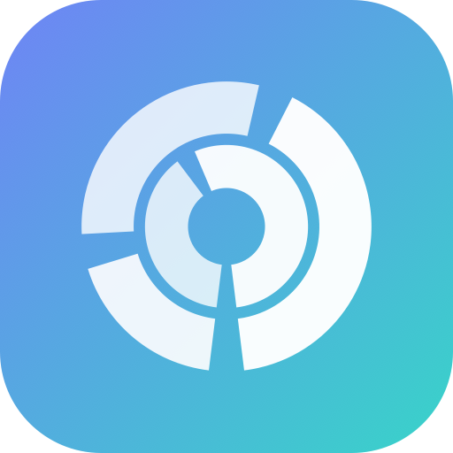

Safe to delete
Regenerable junk — caches, build artifacts, logs. Apps rebuild it on demand. Clear it without a second thought.

DiskSageOpen source · Native macOS 14+
DiskSage maps your disk as a beautiful sunburst — then goes further than any other cleaner: it tells you in plain language what's regenerable junk, what to review, and what to never touch.
Everything goes to the Trash, never a hard delete. 100% offline. No account.
Every folder DiskSage finds gets one of three verdicts from a local rules engine — deterministic, auditable, and completely offline. No cloud, no guessing, no sending your filenames anywhere.
Regenerable junk — caches, build artifacts, logs. Apps rebuild it on demand. Clear it without a second thought.
node_modules, old iOS backups, Docker, duplicates. Deletable, but might hold something you want. DiskSage flags it so you decide.
System files, app bundles, keychains, your own documents. DiskSage will never suggest deleting these — and auto-clean never touches them.
Three views, one job: see where your space went, then reclaim it — safely.
Most cleaners show a pretty chart or delete things for you. DiskSage adds the part that matters — judgement — and finds the space others miss.
tmpA radial map of your disk à la DaisyDisk. Click a ring to drill in, the center to step back. Color by file type or by delete-safety.
Byte-for-byte identical copies — same model downloaded twice, the same video in two folders — grouped so you can keep one and free the rest.
A flat, ranked list of your largest individual files with age and a safety verdict. The fastest path to a quick win.
Finds the regenerable piles other tools miss — app-sandbox tmp, Chromium/Electron caches inside Discord, Slack, VS Code and more.
Big personal files you haven't touched in months — old exports, installers, disk images — flagged for review (never auto-deleted).
DiskSage never hard-deletes. Everything it removes goes to the Trash, so any mistake is one ⌘Z away.
Hands-off sweeps of regenerable junk every few hours. Only ever touches items rated Safe — never your data.
No network calls, no telemetry, no account. The advisor ships inside the app. Your disk stays your business.
The entire app — including auto-clean — is on GitHub under MIT. Read every safety rule. Disagree? Send a one-line PR.
It's curated knowledge of the macOS filesystem — path rules and a few heuristics — that ships inside the binary. Deterministic, auditable, offline.
The same folder always gets the same verdict. No surprises, no model drift.
Every rule is readable Swift in SafetyEngine.swift. Challenge one with a PR.
Your filenames never leave your Mac. There's nothing to send anywhere.
Every feature — including auto-clean — is free under the MIT license. Grab the prebuilt app, or build it yourself. If it helped, support is welcome but never required.
Free
Ad-hoc signed — right-click → Open on first launch.
Free
swift run — that's it.
DiskSage is built in the open and given away for free. Donations are optional and simply fund the work — nothing is gated behind them.
TYWkDcERszTCfYZjeScKXPmn2LrDugdMmc
Boosty, or USDT · TRON network (TRC-20).
No. DiskSage's advisor is a local rules engine — curated knowledge of the macOS filesystem written in plain Swift. It's deterministic and runs entirely offline. You can read every rule in SafetyEngine.swift.
It groups files by exact size, then SHA-256 hashes the candidates that collide — so matches are byte-for-byte certain, not guesses. It keeps one copy and offers the rest. Your files, so it only ever flags them for review.
Yes — every feature, including auto-clean, under the MIT license. Download the prebuilt app or build from source; there's no paywall and no account. If it saved you space, donations are welcome but never required.
DiskSage never hard-deletes — everything goes to the Trash, recoverable until you empty it. It also rates risky items “Review” or “Keep” and never auto-cleans anything but “Safe” junk.
Only regenerable junk in ~/Library/Caches, ~/Library/Logs, and Xcode's DerivedData — and only items rated Safe. It runs on launch and every 6 hours, always to the Trash.
macOS 14 (Sonoma) or later. To scan and clean protected folders, grant Full Disk Access in System Settings → Privacy & Security.